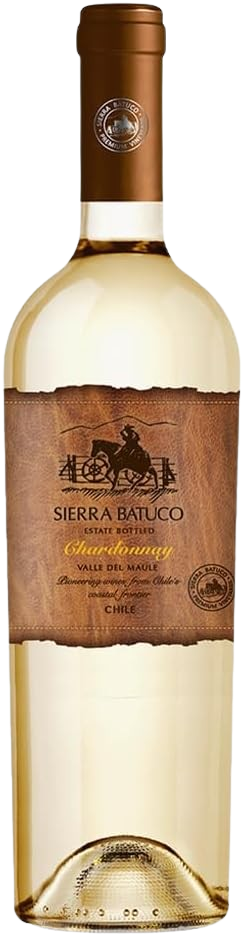

Sierra Batuco Vinho Branco Chileno Chardonnay
Safra: 2023
Região: Valle de Casablanca, Chile
Produtor: Sierra Batuco
Classificação: Branco Seco
Volume: 750 ml
Teor Alcoólico: 13%
Temperatura de Serviço: 10°C
Potencial de Guarda: 5 anos
Decantação: Não necessária
Descrição
O Sierra Batuco Chardonnay apresenta aromas frescos e frutados, com notas de maçã verde, pêssego e leves toques de baunilha. Sua acidez equilibrada e o final longo e elegante fazem deste vinho uma excelente opção para momentos de descontração ou acompanhamentos leves.
Harmonização
- Ceviche de peixe branco
- Salada de folhas verdes com queijo de cabra
- Frango grelhado com ervas finas
- Risoto de limão siciliano
- Frutos do mar
- Queijos frescos e leves
R$ 69,90